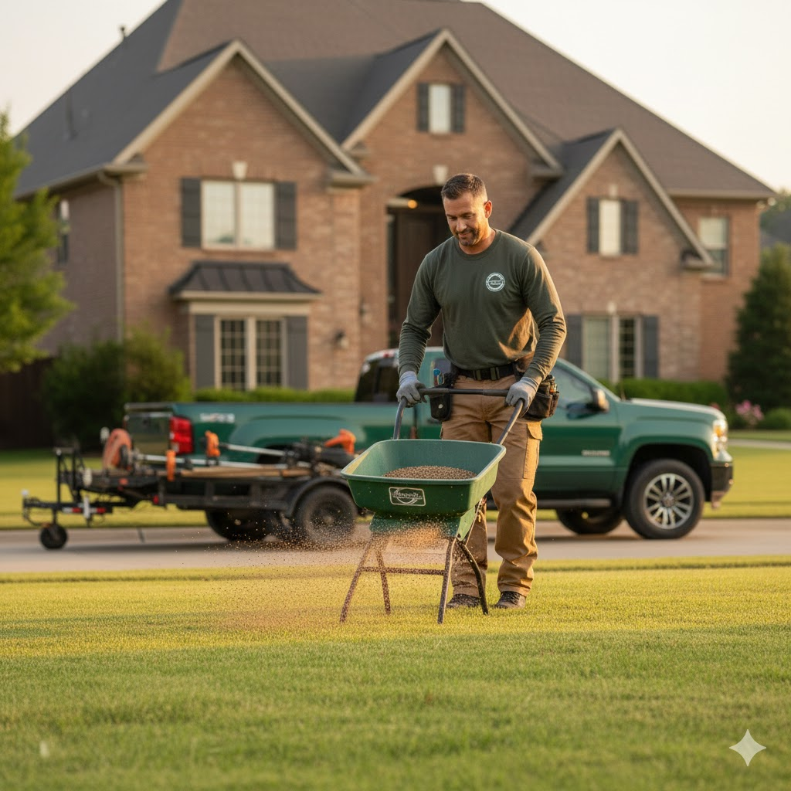

Meet April May
Our horticultural Expert:
More Info
April May is a cornerstone of the GreenScape Solutions team, bringing 14 years of dedicated experience to our clients across Central Ohio. As our resident expert horticulturist, April's passion for plants is evident in every project she touches. She possesses a rare depth of knowledge regarding regional flora, soil ecology, and sustainable growing practices, allowing her to select and cultivate the perfect combination of annuals, perennials, and shrubs to ensure year-round vibrancy. April specializes in flower bed design and maintenance, expertly transforming bare ground into breathtaking displays of color, texture, and fragrance, all while ensuring long-term health and easy care for our clients.
April's designs are renowned for their artistry and functionality. She works closely with each homeowner to understand their aesthetic preferences, sunlight conditions, and maintenance goals, crafting bespoke flower beds that enhance the unique character of the property. Beyond initial design, April oversees meticulous maintenance plans, providing the specialized pruning, fertilization, and seasonal rotation necessary to keep flower beds flourishing beautifully from spring thaw to late autumn. Her commitment to excellence and deep understanding of plant science makes her an invaluable asset, guaranteeing that your garden spaces not only look stunning but are ecologically sound and built to thrive.

Introducing Chris P. Bacon
Our Soil Science specialist
More Info
Chris P. Bacon has been an indispensable part of GreenScape Solutions for over 20 years, serving as our authority on lawn terraforming and soil science. His tenure with the company is a testament to his expertise in building landscapes from the ground up—literally. Chris understands that the foundation of a truly healthy and sustainable lawn lies beneath the surface. He specializes in assessing and manipulating the soil structure, drainage, and composition of a property. This includes complex projects such as correcting severe grading issues, improving water runoff, and creating custom soil blends to ensure optimal conditions for turf growth. His work in terraforming is essential for clients who need radical changes to their property's topography or functionality.
As an expert in soil science, Chris's process begins with a meticulous analysis of the existing environment, using scientific rigor to diagnose nutrient deficiencies, pH imbalances, and compaction problems. He doesn't just treat the symptoms; he addresses the root cause, implementing sustainable solutions that foster deep, resilient turf and vibrant plant life. Whether he's preparing a site for a new construction or rehabilitating an aged, struggling lawn, Chris P. Bacon's two decades of specialized knowledge guarantee that the ground underfoot is perfectly prepared to support a thriving, long-lasting GreenScape Solutions masterpiece.

Introducing Isadore Bell
Our Climatology and Maintenance Specialist
More Info
Isadore Bell is a living history of GreenScape Solutions, having served the Central Ohio community for close to 30 years. His nearly three decades of service make him one of the most experienced and trusted members of our team, with an encyclopedic knowledge of what it takes to maintain a flawless landscape year-round. Isadore specializes in lawn care maintenance, bringing a deep, consistent standard of excellence to every property he oversees. His routine maintenance programs go beyond simple mowing; they are meticulously planned schedules covering essential tasks like aeration, dethatching, seasonal clean-ups, and precise trimming to ensure every lawn and garden bed remains healthy, clean, and immaculately presented throughout the changing seasons.
What truly sets Isadore apart is his expertise in grass and plant climatology. Having worked in Central Ohio for so long, he possesses an unparalleled understanding of how local weather patterns, microclimates, and extreme temperature shifts impact specific grass types and plant health. Isadore uses this deep knowledge to anticipate problems before they arise, adjusting watering schedules, modifying soil treatments, and preparing landscapes for everything from summer droughts to harsh winter freezes. His ability to fuse decades of hands-on maintenance experience with advanced climatological insight ensures that the landscapes he manages are not only beautiful today, but resilient and sustainable for years to come.

Meet Phil Dirt
Our Turf Health Specialist
More Info
Phil Dirt is a dedicated member of the GreenScape Solutions team, bringing over 8 years of specialized experience in maintaining the health and beauty of Central Ohio lawns. As our expert in lawn care and fertilization, Phil understands that a vibrant, emerald-green turf requires more than just regular mowing—it demands a scientifically tailored approach to nutrient management and pest control. He excels in designing comprehensive, seasonal fertilization programs that are specifically adapted to the unique soil types and grass varieties found in our region. Phil ensures that every lawn he manages receives the precise blend of nutrients required to promote deep root growth, dense blade coverage, and exceptional resilience against environmental stress.
Phil also holds expertise in the responsible and effective use of chemical treatments. He is highly skilled in identifying and mitigating issues like invasive weeds, grubs, and lawn diseases, utilizing targeted, professional-grade applications to protect your investment while minimizing environmental impact. His methodical approach involves accurate diagnosis, carefully timed treatments, and detailed monitoring, guaranteeing maximum efficacy and safety. Whether your lawn needs a boost of specialized nutrients or a precise defensive strategy against pests, Phil Dirt provides the technical skill and proven dedication necessary to cultivate a lush, weed-free, and picture-perfect lawn.